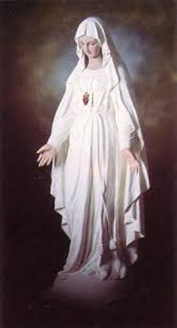
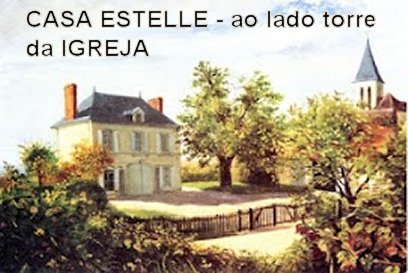
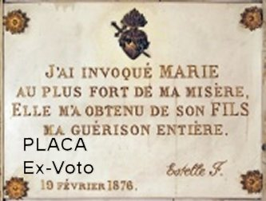
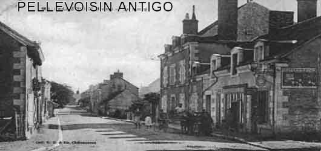
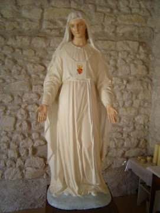
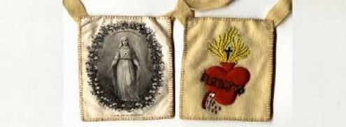
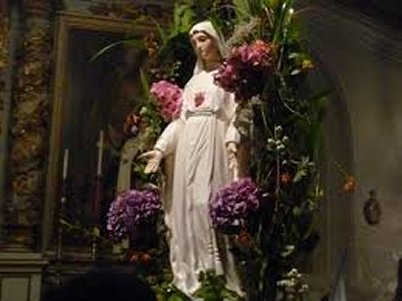

“AS APARIÇÕES DA”
“VIRGEM MARIA”

PRIMEIRA APARIÇÃO DE NOSSA SENHORA
A VIRGEM MARIA lhe disse: “Você deverá sofrer por mais cinco dias em honra das cinco chagas de CRISTO. No fim dos cinco dias, deverá morrer ou será curada. Se MEU FILHO lhe conceder a vida, depois você deverá divulgar a MINHA glória”.
Estelle ficou pensando como poderia anunciar a Glória de MARIA... E então, viu junto de NOSSA SENHORA uma placa de mármore branco como exemplo, fornecido pela SANTA MÃE. Então ela compreendeu o que devia fazer e ficou pensando, onde colocar aquela placa? Na Eglise de Notre Dame des Victoires em Paris ou em Pellevoisin? NOSSA SENHORA disse: “Em Notre Dame des Victoires em Paris já existem muitos testemunhos de Meu Poder. Em Pellevoisin, não existe nenhum. Os fiéis daqui têm necessidade de um estimulo.” Estelle então prometeu fazer um esforço maior pela glória da MÃE SANTÍSSIMA. Nesse momento NOSSA SENHORA desapareceu.
SEGUNDA APARIÇÃO DE NOSSA SENHORA
Na noite seguinte a SANTÍSSIMA VIRGEM apareceu novamente. Era terça-feira, e o demônio também voltou a aparecer. Mas desta vez ele guardou certa distância da cama, ficou só olhando de longe. NOSSA SENHORA aproximou-se e disse a Estelle: “Não temas, estou aqui. Se MEU FILHO lhe concede a vida, será uma bênção para você. Serás curada no sábado e anunciarás a Minha Glória”.
- “Mas minha bondosa MÃE, já que estou bem preparada, não é melhor que eu morra?”
- “Ingrata, se Meu FILHO lhe salva, é porque tens necessidade da vida. Como ficarão seus parentes? Por isso ELE conservará a sua vida, mas não creio que lhe poupará os sofrimentos. Porque o sofrimento dá méritos à vida. Foi a sua resignação e paciência que sensibilizaram o CORAÇÃO do MEU FILHO. Não percas o benefício que você escolheu”.
Neste mesmo momento, Estelle viu numa tela, as suas faltas passadas. Faltas que ela considerava sem importância. NOSSA SENHORA desapareceu deixando-a em grande contrição, pois ela compreendeu que mesmo os pecados veniais ofendem e são detestados por NOSSA SENHORA.
TERCEIRA APARIÇÃO DE NOSSA SENHORA.
Aconteceu na quarta-feira. O demônio ainda apareceu; continuou rondando Estelle, todavia estava mais longe. Contudo ela observou os seus gestos de ódio. Na verdade, Estelle estava também com certo temor, em face dos seus próprios pecados vistos na noite anterior. Entretanto a VIRGEM MARIA disse: “Ânimo, minha filha, aquilo já passou, a sua conversão resgatou as faltas passadas.”
Num gesto misericordioso a VIRGEM apresentou numa tela os atos de virtudes dela, realçando o lado bom do coração de Estelle; também os grandes desejos que estavam no seu coração de jovem: a santificação dos bons; a conversão dos pecadores; o cultivo da bondade e da fraternidade de uns com os outros. Depois NOSSA SENHORA disse: "EU sou Misericordiosa e obtenho tudo do MEU FILHO. Sua boa ação, suas orações fervorosas e sua cartinha tocaram o Meu Coração Materno. Na pequena carta que você me escreveu em Setembro, sobretudo esta frase me tocou particularmente: “Vede a situação de meus pais, caso eu venha a morrer. Eles teriam que pedir esmolas. Lembrai-VOS dos VOSSOS sofrimentos quando vistes JESUS, VOSSO FILHO, cravado na Cruz”. “Mostrei essa carta ao MEU FILHO. Teus pais necessitam de ti. De agora em diante, trata de ser fiel. Não percas as graças que lhe são dadas, e anuncia a minha glória”. NOSSA SENHORA se despediu e desapareceu.
QUARTA APARIÇÃO DE NOSSA SENHORA
Foi uma visita rápida, mas NOSSA SENHORA fez questão de lembrar a Estelle Faguette, a recomendação de anunciar a glória da SANTA MÃE DE DEUS.
QUINTA APARIÇÃO DE NOSSA SENHORA

No dia seguinte ás 6 horas da manhã, o Padre Salmon voltou para ver como estava Estelle. Encontrou-a ainda no leito, e para sua surpresa, “viva”. A previsão médica de morte, não se confirmou. Ele então, como das vezes anteriores, celebrou a Santa Missa no quarto dela, também na presença de outras pessoas. Terminada a Missa perguntou a Estelle como ela se sentia? Ela fez o sinal da Cruz com o braço direito totalmente cicatrizado (das injeções e drogas injetadas), levantou-se normalmente, foi ao lavatório e vestiu-se sozinha, sorrindo e radiante de saúde. Sem exagero, a cidade quase inteira de Pellevoisin veio visitá-la para ver o admirável e extraordinário milagre acontecido. Também vieram os médicos que a julgaram condenada. Realizaram todos os exames e ficaram impressionados. Estelle estava totalmente curada. Para a comprovação definitiva, Estelle foi levada a Paris para o Dr. Bucquoy, da Academia de Medicina de Paris a examinar. O parecer dele foi decisivo para a comissão de saúde que em 1877 estudava o caso. E a cura dela não foi passageira aos 33 anos de idade, Estelle viveu em boa saúde até a idade de 86 anos.
Mas o que aconteceu
durante aquela noite? NOSSA SENHORA apareceu e se postou bem próxima
ao leito de Estelle. Ao lado da Santa Mãe havia uma placa de 
Uma vez curada, Estelle lançou-se ao trabalho pela glória de NOSSA MÃE SANTÍSSIMA, tal como ELA lhe havia pedido.
SEXTA APARIÇÃO DE NOSSA SENHORA
Afligindo-se com suas próprias imperfeições, na execução do trabalho para a Glória de NOSSA SENHORA, durante a oração do Rosário a VIRGEM MARIA lhe apareceu: “Calma, Minha filha. Paciência. Terás sofrimentos, mas estarei sempre ao seu lado”.
SÉTIMA APARIÇÃO DE NOSSA SENHORA 
No dia 2 de Julho, festa da Visitação da SANTÍSSIMA VIRGEM MARIA, NOSSA SENHORA lhe apareceu às 23h30. A MÃE DE DEUS estava linda como sempre, cercada de rosas de todas as cores, particularmente brancas, vermelhas e amarelas. Foram três curtas aparições, como a nos recordar os três Terços que compõem o Rosário. ELA disse: "Tens anunciado a minha glória. Continua minha filha. Meu FILHO tem almas prediletas. O CORAÇÃO DE JESUS tem tanto Amor pelo MEU CORAÇÃO, que nada LHE recusa. Por MEU intermédio ELE tocará os corações mais empedernidos". Estelle queria ainda pedir um sinal do poder da SANTÍSSIMA VIRGEM MARIA, mas não conseguia se exprimir adequadamente. NOSSA SENHORA lendo o seu pensamento, disse: “Tua cura não é uma das maiores provas de meu poder?” E acrescentou: “Vim para a conversão dos pecadores”.
OITAVA APARIÇÃO DE NOSSA SENHORA
No dia seguinte NOSSA SENHORA apareceu mais uma vez cercada de rosas. Estelle a esperava com certa agitação, e NOSSA SENHORA a repreendeu suavemente: “Gostaria que fosses mais calma. EU não tinha marcado dia e nem hora em que voltaria. Necessitas de repouso. Ficarei apenas alguns minutos”.
NONA APARIÇÃO DE NOSSA SENHORA
Aconteceu no dia 9 de Setembro. NOSSA SENHORA insistiu com Estelle, que ela deveria manter a necessária calma, procurando controlar a sua ansiedade. “Foste privada de minha presença no dia 15 de Agosto (Assunção de NOSSA SENHORA aos Céus),"porque não tinhas suficiente calma. Ainda ontem EU pensei em vir, mas tiveste que ficar sem Minha Presença. Esperava de você, um decidido ato de submissão e de obediência. Há muito tempo os Tesouros de MEU FILHO estão abertos”. Estelle, moça simples, com pouca instrução social, ficava afobada, apressada, em face das visitas de NOSSA SENHORA. E aquilo incomodava a MÃE DE DEUS, porque não era uma atitude normal, e por isso ELA insistia, para que Estelle mantivesse a calma. Nesse instante NOSSA SENHORA lhe deu o escapulário do SAGRADO CORAÇÃO DE JESUS, tirando-o de seu peito: “Tenho predileção por esta devoção, e nela estarei honrada". NOSSA SENHORA, Apóstola da Devoção ao SAGRADO CORAÇÃO DE JESUS, trazia consigo esse Escapulário, e nos recomendou, a todos nós, o CORAÇÃO que tanto amou os homens.
DÉCIMA APARIÇÃO DE NOSSA SENHORA
A VIRGEM SANTÍSSIMA portava também
esse Escapulário quando Apareceu pela DÉCIMA VEZ, e não o deixará mais. Eram três
horas da tarde, soaram as Vésperas, e ELA disse antes de desaparecer:
“Que todos rezem”.

DÉCIMA PRIMEIRA APARIÇÃO
Aconteceu na presença de 15 pessoas. Era uma sexta-feira, dia 15 de Setembro. NOSSA SENHORA apareceu com as Mãos juntas em Oração. Ela disse: “Sei que fizeste um grande esforço para se manter calma. Não é apenas a você que peço calma, mas para toda Igreja e para a França. A Igreja não goza daquela paz que EU desejo”. .Após profundo suspiro acrescentou: “Que todos rezem e tenham confiança em MIM. Oh França! O que não fiz para este país? Quantas advertências! E mesmo assim ela se recusa ouvir. Não posso mais conter o MEU FILHO”. E terminou acentuando especialmente estas palavras: “A França sofrerá”.
Então, passaram diante dos olhos de Estelle vários quadros nunca vistos antes: soldados com uniformes azuis, que ela não conhecia, usando capacetes diferentes “em forma de caldeirão”, segundo a expressão que ela mesma usou. Estavam entrincheirados. Tempos depois, durante a Primeira Grande Guerra Mundial, ela reconheceu aquelas fardas nos soldados.
DÉCIMA SEGUNDA APARIÇÃO
Aconteceu no dia 1º de Novembro de 1876 e NOSSA SENHORA não falou nada. Apenas pelos SEUS gestos carinhosos e por delicados sorrisos, revelou ternura e bondade em relação à Estelle. Da mesma maneira que chegou, desapareceu, em silêncio.
DÉCIMA TERCEIRA APARIÇÃO
Esta Aparição aconteceu na presença de uma
religiosa que rezava o Terço em companhia de Estelle. NOSSA SENHORA disse:
“EU escolhi você, pois escolho sempre os pequenos e
fracos para a MINHA Glória. Coragem Minha filha: o tempo das provas vai começar”. Em seguida ELA cruzou os braços e desapareceu. 
DÉCIMA QUARTA APARIÇÃO
Foi no sábado, dia 11 de Novembro, às 16 horas, em presença de cinco pessoas rezando o Rosário na companhia de Estelle. NOSSA SENHORA lhe disse: “Hoje não perdeste o seu tempo, trabalhaste para MIM”. De fato, Estelle tinha bordado um Escapulário que ficou muito bonito, e a VIRGEM MARIA acrescentou: “É preciso fazer muitos outros”.
DÉCIMA QUINTA APARIÇÃO
NOSSA
SENHORA escolheu o dia da Festa da IMACULADA CONCEIÇÃO DE MARIA, dia 8 de Dezembro de 1876,
pouco depois das 12 horas (meio-dia), para a SUA última Aparição. Aconteceu na presença
de 15 pessoas que rezavam o Rosário na companhia de Estelle no quarto dela, que com a
autorização do senhor Bispo, foi transformado num belo e confortável Oratório.
NOSSA MÃE SANTÍSSIMA apareceu maravilhosa cercada por uma quantidade
incalculável de rosas brancas, amarelas e vermelhas. Ela disse a Estelle:
“MINHA filha, lembre-se sempre das MINHAS
Palavras e tenha absoluta certeza que EU SOU Sua MÃE. SOU toda Misericórdia e SENHORA
DE MEU FILHO JESUS (MÃE DE JESUS)
. Quero mais Amor e Respeito
por ELE. O que mais me aflige é a falta de respeito por MEU FILHO na SANTA
COMUNHÃO (SAGRADA EUCARISTIA)
e as atitudes de pessoas revelando
distração durante a Santa Missa, ou durante as próprias orações na residência.
O CORAÇÃO DE MEU FILHO tem tanto Amor pelo MEU CORAÇÃO, que nada ME Recusa. Por
isso mesmo, por MINHA intercessão, JESUS tocará os corações mais empedernidos. Então
saiba que EU Vim especialmente para a conversão dos pecadores. Há muito tempo os
tesouros de MEU FILHO está aberto à disposição de todos que procuram e buscam a
santidade. Que rezem e sejam competentes no Amor. Não é somente a você que peço
calma, mas a todos que quero o bem. Guarde e procure repetir as MINHAS Palavras,
elas irão fortificar os seus dias, inspirar as suas ações e lhe reconfortar na hora
da provação. Adeus. Não me reverás mais”.

Estelle ficou meio perturbada pelas últimas palavras de NOSSA SENHORA. A VIRGEM MARIA percebeu e acrescentou de modo profundamente materno: “Estarei invisivelmente ao seu lado”. Estelle então percebeu ao longe, a esquerda da visão, pessoas com gestos ameaçadores. Mas também, no outro lado da visão, ela viu pessoas que pareciam boas. NOSSA SENHORA referindo-se ao grupo dos maus, disse: “Não os temas. EU escolhi você para ME dar glórias e propagar esta devoção”. Estelle vendo que NOSSA SENHORA segurava o escapulário pediu-o como presente, e a VIRGEM MARIA lhe ordenou: “Levanta e beije-o”. Estelle obedeceu e exclamou admirada: “Beijei verdadeiramente um Coração de Carne, pois senti o calor da circulação do sangue e as pulsações”.
NOSSA SENHORA lhe disse para apresentá-lo ao senhor Bispo aquele modelo de escapulário, exprimindo o desejo de que todas as pessoas o usassem, a fim de reparar os ultrajes sofridos pelo SANTÍSSIMO SACRAMENTO. Assim, em sinal das Graças que receberão aos que portarem o “ESCAPULÁRIO”, NOSSA SENHORA fez cair de suas MÃOS uma chuva abundante de Graças. Ela disse: “Essas Graças são de MEU FILHO. Colho-as em SEU CORAÇÃO. ELE nunca irá me recusá-las”.
Estelle então lhe perguntou o que conviria colocar do outro lado do escapulário, e ouviu a seguinte resposta: “Quero que você escolha. Submeterás a sua idéia a Igreja, que então definirá”. E afastando-se, a SANTA MÃE acrescentou:“Coragem. Se o senhor Bispo não lhe conceder o que pedes e colocar algumas dificuldades, irás além. Nada temas EU lhe ajudarei”. Com estas palavras NOSSA SENHORA desapareceu.